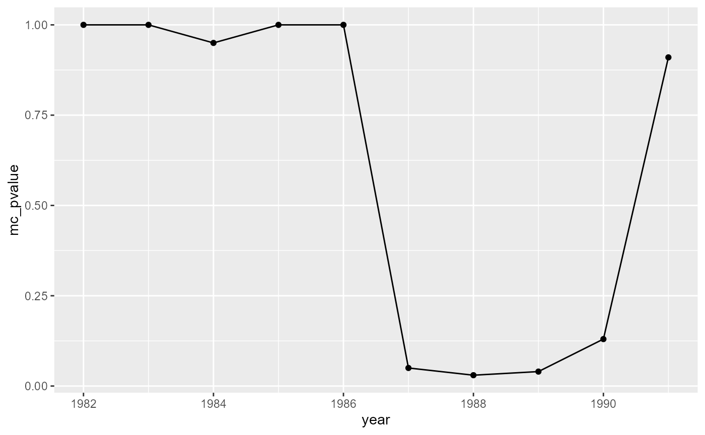

Overview
Statistical surveillance is any sort of systematic, ongoing analysis aimed at detecting changes in outcomes as they occur. This process requires developing a model to predict the outcome of interest, and then systematically examining the measured outcomes as they occur and determining when the observed outcomes no longer match the predicted outcomes. If the amount of data reported is large or if there is significant natural variability in the rate of case events, statistical techniques can be extremely helpful in determining when a change in the number of events is important, and when it is merely noise
The key steps in applying statistical surveillance are as follows:
Collecting and standardizing measurements of the outcome variable
Developing a statistical model to predict the outcome variable
Using the statistical model to predict the outcome variable in a given region or time period.
Applying an alarm function to compare the actual outcome with the predictions, and determine the likelihood of the actual outcome happening by chance given the predictions.
Repeating this process continually as new data is collected.
The statsurv package is designed to help with every
aspect of this process, with a particular emphasis on helping design and
evaluate new statistical surveillance systems. It’s perfectly possible
that you’ll use statsurv when you’re designing your
surveillance system, but decide that it doesn’t make sense to use the
package when you actually implement the system.
Installation
The statsurv package currently lives on GitHub, at https://github.com/CO-TEEO/statsurv. Because it is not
currently on CRAN, installation is slightly more involved than for a
typical R package. The easiest way to install it is to run the
commands:
install.packages("remotes")
remotes::install_github("cran/reliaR")
remotes::install_github("BenjaK/scanstatistics")
remotes::install_github("CO-TEEO/statsurv")in RStudio.
Spacetime data
The statsurv package has a very simple way of
representing data in a series of spatial areas of time. Spacetime data
is stored in a data frame that contains the columns
id_space and id_time. The entries in each of
these columns must be a set of consecutive integers. The column
id_time identifies the time point associated with each row
of the data frame, with lower numbers being earlier and higher numbers
being later. The column id_space identifies the spatial
location or area associated with each row. The specific values of
id_space are not assumed to have any meaning or order
beyond identification.
If you’re even unsure about whether you’re data is correctly
formatted for statsurv, you can call the function
validate_spacetime_data, which will give an error if the
data frame does not follow the spacetime data conventions.
For more information about formatting data frames to follow these conventions, see the spacetime data vignette
Using the statsurv package
As an example of how to use the statsurv package, we’re
going to use the a data set of brain cancer cases in New Mexico. This
dataset was studied by Kulldorff in developing SaTScan, who identified a
potential cluster of cases in two counties between 1986 and 1989.
Before we start performing surveillance, we need to load the data.
The populations and case counts, as well as the county boundaries, are
included as datasets in the statsurv package. The data in
the package already comes with a baseline estimate, but we’re going to
remove that column and generate our own.
library(scanstatistics)
library(broom.mixed)
library(lubridate)
library(ggplot2)
library(tibble)
library(dplyr)
library(tidyr)
library(broom)
library(lme4)
library(sf)
data("NM_county_sf")
data("NM_data")
NM_data <- as_tibble(NM_data) %>%
select(-baseline_est)
NM_data
#> # A tibble: 608 x 6
#> id_time id_space year county population count
#> <dbl> <dbl> <int> <fct> <int> <int>
#> 1 1 1 1973 bernalillo 353813 16
#> 2 2 1 1974 bernalillo 357520 16
#> 3 3 1 1975 bernalillo 368166 16
#> 4 4 1 1976 bernalillo 378483 16
#> 5 5 1 1977 bernalillo 388471 15
#> 6 6 1 1978 bernalillo 398130 18
#> 7 7 1 1979 bernalillo 407460 19
#> 8 8 1 1980 bernalillo 416461 22
#> 9 9 1 1981 bernalillo 425133 21
#> 10 10 1 1982 bernalillo 433476 21
#> # ... with 598 more rowsIn this case, the data is already provided to us at the county level. If instead we had individual case locations, we’d have to first aggregate them to the year and county level.
Developing a model
Our first step in the analysis is to develop a model to predict the
number of cases in each county in each year. Our model is going to be
used to generate estimates of the expected number of cases in the
absense of any clusters, so we don’t want to include the potential
cluster when fitting our model. We’ll make 2 data sets: one with data
through 1985 to used to fit the model, and one with data through 1989 to
generate predictions. We can use the prepare_training_data
to generate the first data set.
prediction_data <- NM_data %>%
filter(year <= 1989)
training_data <- prepare_training_data(prediction_data,
outcome_cols = count,
split_id = 14,
prep_strategy = "truncate")Now that we have our data sets, we can now fit a model. Let’s start with a fairly simple model, where the number of cases depends on the year, with an offset for the log population of the county.
mod <- glm(count ~ I(year - 1985),
family = poisson(link = "log"),
offset = log(population),
data = training_data)Then, to generate predictions of the number of cases, we can use the
extract_yhat function from statsurv. This will
add a column .fitted to our data frame containing the model
estimates for each location.
aug_data <- extract_yhat(mod, prediction_data)
plot(aug_data$count, aug_data$.fitted, xlab = "Observed Counts", ylab = "Model Predictions")
abline(a = 0, b = 1, col = "blue")Those model predictions look OK. But maybe they’d be better if we added a random effect for the county?
mod2 <- glmer(count ~ I(year - 1985) + (1 | county) + offset(log(population)),
family = poisson(link = "log"),
data = training_data)
aug_data2 <- extract_yhat(mod2, prediction_data)
plot(aug_data2$count, aug_data2$.fitted, xlab = "Observed Counts", ylab = "Model Predictions")
abline(a = 0, b = 1, col = "blue")That looks a bit better. Let’s use the results from that model and see if we can identify any clusters.
To identify clusters, we’re going to use the expectation-based
poisson scan statistic. To do this, we’ll use the function
scan_eb_poisson2. This function calls
scan_eb_poisson from the scanstatistics
package, but takes inputs in a more convenient form.
To call this function, we need a single spacetime data frame
containing the observed cases and baseline estimates for each location,
and a set of zones that we want to scan over. For
statsurv and scanstatistics, each zone is a
set of 1 or more spatial locations.
We can construct the zones we want to investigate from our spatial
setup using the create_zones function. The function takes
an sf object and construct zones using a k-nearest
neighbors approach. For each location, there will be a zone containing
the location itself, a zone containing the location and its nearest
neighbor, a zone containing the location and its two nearest-neighbors,
up to the maximum size.
zones <- create_zones(NM_county_sf, max_k = 10, min_k = 1)Then we can call scan_eb_poisson2. We have to pass a
valid spacetime data object to the function, because the function needs
to know the spatial location and time period associated with each row.
scan_eb_poisson2 also uses tidy-evaluation, which
means that we can specify the columns containing the observed cases and
baseline estimates using bare words, not quoted strings, like we would
for dplyr::select or dplyr::mutate.
scan_res <- scan_eb_poisson2(aug_data2, outcome_col = count, zones,
baseline_col = .fitted, n_mcsim = 99)
scan_res
#> Data distribution: Poisson
#> Type of scan statistic: expectation-based
#> Setting: univariate
#> Number of locations considered: 32
#> Maximum duration considered: 17
#> Number of spatial zones: 288
#> Number of Monte Carlo replicates: 99
#> Monte Carlo P-value: 0.01
#> Gumbel P-value: NULL
#> Most likely event duration: 4
#> ID of locations in MLC: 15, 26We see that the most likely cluster covers 4 years, in locations 15 and 26. We can look up which counties those are:
NM_county_sf %>%
filter(id_space %in% c(15, 26))
#> Simple feature collection with 2 features and 2 fields
#> Geometry type: POLYGON
#> Dimension: XY
#> Bounding box: xmin: 371834.6 ymin: 3877849 xmax: 435402.4 ymax: 3984704
#> CRS: +proj=utm +zone=13
#> id_space county geometry
#> 1 15 losalamos POLYGON ((373586 3965813, 3...
#> 2 26 santafe POLYGON ((394170.5 3965524,...Los Alamos and Santa Fe counties, which are the same counties identified by Kulldorff, 1988.
Evaluating statistical surveillance methods
While it’s definitely a good sign that our method identified the same
potential cluster as Kulldorff and scanstatistics, that
isn’t the only thing we care about. Statistical surveillance techniques
are usually used prospectively, meaning that they’re typically
used repeatedly as new data is collected. When evaluating a statistical
surveillance system, we want to understand how quickly the can detect a
true cluster after it starts, and how likely it is to give us false
alarms. statsurv has a number of functions to help mimic
the experience of running a surveillance system every year as new data
is collected.
Performing surveillance repeatedly
The first step in evaluating a surveillance system is to figure out
what data would be present each time we run the model. We can use the
window_idtime function in the package to do this. We give
the minimum number of data points we need to train a model on, and the
number of data points we want to generate predictions for, and
window_idtime will give us the data available for the model
every time we run it.
For this example, we’re going to require a minimum of 7 years of data to fit the model on, and for every year, we’re going to generate predictions for 3 years.
windowed_data <- window_idtime(NM_data, min_train = 7, max_train = Inf, n_predict = 3,
step = 1)
windowed_data
#> # A tibble: 10 x 4
#> window_time_id window_space_id split_id curr_data
#> <dbl> <list> <dbl> <list>
#> 1 10 <dbl [32]> 8 <tibble [320 x 6]>
#> 2 11 <dbl [32]> 9 <tibble [352 x 6]>
#> 3 12 <dbl [32]> 10 <tibble [384 x 6]>
#> 4 13 <dbl [32]> 11 <tibble [416 x 6]>
#> 5 14 <dbl [32]> 12 <tibble [448 x 6]>
#> 6 15 <dbl [32]> 13 <tibble [480 x 6]>
#> 7 16 <dbl [32]> 14 <tibble [512 x 6]>
#> 8 17 <dbl [32]> 15 <tibble [544 x 6]>
#> 9 18 <dbl [32]> 16 <tibble [576 x 6]>
#> 10 19 <dbl [32]> 17 <tibble [608 x 6]>window_idtime gives back a nested data frame,
or a data frame where one or more of the columns is a list of data
frames. The tidyverse website has articles about nested data
frames and list-columns in
data frames if you want more information about these concepts.
Nested data frames are a great way of keeping track of sets of data,
but they mean that your data frames now have list-columns in
them, which makes working with them a little more complicated.
Typically, when you use a function in mutate, the whole
column gets passed to the function at once. That doesn’t usually work
with list-columns - you fit a model on some data by passing it a data
frame, not a list of data frames.
If you’re using dplyr and your data frame has
list-columns, you’ll typically want to first use rowwise,
so that each row in your data frame is treated independently, before you
use mutate or other verbs that create or modify columns.
And if you create new columns with interesting things in them, like data
frames or model fits, you’ll need to remember to wrap the results in a
list.
So here’s how we’d prepare our training data and fit a model for each time point using functions from `dplyr:
windowed_data %>%
rowwise() %>%
mutate(training_data = list(prepare_training_data(curr_data,
outcome_cols = count,
split_id = split_id,
prep_strategy = "truncate")),
mod = list(glmer(count ~ I(year - 1985) + (1 | county) + offset(log(population)),
family = poisson(link = "log"),
data = training_data)))
#> # A tibble: 10 x 6
#> # Rowwise:
#> window_time_id window_space_id split_id curr_data training_data mod
#> <dbl> <list> <dbl> <list> <list> <list>
#> 1 10 <dbl [32]> 8 <tibble> <tibble> <glmerMod>
#> 2 11 <dbl [32]> 9 <tibble> <tibble> <glmerMod>
#> 3 12 <dbl [32]> 10 <tibble> <tibble> <glmerMod>
#> 4 13 <dbl [32]> 11 <tibble> <tibble> <glmerMod>
#> 5 14 <dbl [32]> 12 <tibble> <tibble> <glmerMod>
#> 6 15 <dbl [32]> 13 <tibble> <tibble> <glmerMod>
#> 7 16 <dbl [32]> 14 <tibble> <tibble> <glmerMod>
#> 8 17 <dbl [32]> 15 <tibble> <tibble> <glmerMod>
#> 9 18 <dbl [32]> 16 <tibble> <tibble> <glmerMod>
#> 10 19 <dbl [32]> 17 <tibble> <tibble> <glmerMod>That works, but it’s a little clunky. statsurv provides
a single function, rowmute, that’s supposed to remove a lot
of the annoyance of working with list columns in data frames.
rowmute is a version of mutate that always
works one row at a time. It’s name is a portmanteau of
rowwise and mutate, which might help you
remember what it’s for.
Here’s how we’d do the same thing using rowmute. It’s
only one function call instead of 2, and we don’t have to remember to
return a list. It should just work, but if you find a situation where it
doesn’t, you can always replace it with rowwise and
mutate.
model_fits <- windowed_data %>%
rowmute(training_data = prepare_training_data(curr_data,
outcome_col = count,
split_id = split_id,
prep_strategy = "truncate"),
mod = glmer(count ~ I(year - 1985) + (1 | county) + offset(log(population)),
family = poisson(link = "log"),
data = training_data))
model_fits
#> # A tibble: 10 x 6
#> window_time_id window_space_id split_id curr_data training_data mod
#> <dbl> <list> <dbl> <list> <list> <list>
#> 1 10 <dbl [32]> 8 <tibble> <tibble> <glmerMod>
#> 2 11 <dbl [32]> 9 <tibble> <tibble> <glmerMod>
#> 3 12 <dbl [32]> 10 <tibble> <tibble> <glmerMod>
#> 4 13 <dbl [32]> 11 <tibble> <tibble> <glmerMod>
#> 5 14 <dbl [32]> 12 <tibble> <tibble> <glmerMod>
#> 6 15 <dbl [32]> 13 <tibble> <tibble> <glmerMod>
#> 7 16 <dbl [32]> 14 <tibble> <tibble> <glmerMod>
#> 8 17 <dbl [32]> 15 <tibble> <tibble> <glmerMod>
#> 9 18 <dbl [32]> 16 <tibble> <tibble> <glmerMod>
#> 10 19 <dbl [32]> 17 <tibble> <tibble> <glmerMod>Then we can use rowmute again to extract the model
predictions
model_predictions <- model_fits %>%
rowmute(aug_data = extract_yhat(mod, curr_data))This adds the column aug_data to our giant data frame of
everything, containing the model predictions at every time point.
Finally, we can use this data to calculate a scan statistic at every point.
scan_results <- model_predictions %>%
rowmute(scan_res = scan_eb_poisson2(aug_data, outcome_col = count, zones,
baseline_col = .fitted, n_mcsim = 99))
scan_results
#> # A tibble: 10 x 8
#> window_tim~1 windo~2 split~3 curr_d~4 traini~5 mod aug_data scan_res
#> <dbl> <list> <dbl> <list> <list> <list> <list> <list>
#> 1 10 <dbl> 8 <tibble> <tibble> <glmerMod> <tibble> <scnsttst>
#> 2 11 <dbl> 9 <tibble> <tibble> <glmerMod> <tibble> <scnsttst>
#> 3 12 <dbl> 10 <tibble> <tibble> <glmerMod> <tibble> <scnsttst>
#> 4 13 <dbl> 11 <tibble> <tibble> <glmerMod> <tibble> <scnsttst>
#> 5 14 <dbl> 12 <tibble> <tibble> <glmerMod> <tibble> <scnsttst>
#> 6 15 <dbl> 13 <tibble> <tibble> <glmerMod> <tibble> <scnsttst>
#> 7 16 <dbl> 14 <tibble> <tibble> <glmerMod> <tibble> <scnsttst>
#> 8 17 <dbl> 15 <tibble> <tibble> <glmerMod> <tibble> <scnsttst>
#> 9 18 <dbl> 16 <tibble> <tibble> <glmerMod> <tibble> <scnsttst>
#> 10 19 <dbl> 17 <tibble> <tibble> <glmerMod> <tibble> <scnsttst>
#> # ... with abbreviated variable names 1: window_time_id, 2: window_space_id,
#> # 3: split_id, 4: curr_data, 5: training_dataAnd now we have our results! A list of the scan statistic at every point in time. Once we have the results, there’s a couple things we can do with them.
First, we can extract information about the top cluster at every time
point, using the report_top_clusters function.We’ll then
unnest the resulting data frame to get the information out
as a single data frame.
top_clusters_over_time <- scan_results %>%
rowmute(top_cluster = report_top_clusters(scan_res, score, max_reported = 1)) %>%
select(window_time_id, top_cluster) %>%
unnest(top_cluster)Let’s add back in the information about the year and the counties affected:
years <- distinct(NM_data[, c("id_time", "year")])
top_clusters_over_time <- left_join(top_clusters_over_time, years,
by = c("window_time_id" = "id_time"))
top_clusters_over_time %>%
rowmute(counties = NM_county_sf$county[zones[[zone]]]) %>%
select(year, duration, score, mc_pvalue, counties) %>%
unnest_wider(counties)
#> # A tibble: 10 x 14
#> year duration score mc_pva~1 ...1 ...2 ...3 ...4 ...5 ...6 ...7 ...8
#> <int> <dbl> <dbl> <dbl> <chr> <chr> <chr> <chr> <chr> <chr> <chr> <chr>
#> 1 1982 1 5.21 0.21 curry roos~ NA NA NA NA NA NA
#> 2 1983 2 5.42 0.19 curry roos~ NA NA NA NA NA NA
#> 3 1984 5 5.57 0.17 bern~ losa~ mora rioa~ sand~ sanm~ sant~ taos
#> 4 1985 1 6.82 0.08 bern~ catr~ dona~ linc~ sand~ sier~ soco~ torr~
#> 5 1986 2 7.53 0.01 bern~ catr~ dona~ linc~ sand~ sant~ sier~ soco~
#> 6 1987 2 10.3 0.01 colf~ guad~ hard~ losa~ mora sanm~ sant~ taos
#> 7 1988 3 9.68 0.01 colf~ deba~ guad~ hard~ losa~ mora quay sanm~
#> 8 1989 4 7.87 0.04 losa~ sant~ NA NA NA NA NA NA
#> 9 1990 5 5.66 0.11 colf~ guad~ hard~ losa~ mora quay sanm~ sant~
#> 10 1991 17 3.78 0.6 sier~ NA NA NA NA NA NA NA
#> # ... with 2 more variables: ...9 <chr>, ...10 <chr>, and abbreviated variable
#> # name 1: mc_pvalueInterestingly, we see that in addition to the cluster identified in 1989, several other, stronger clusters were detected in previous years. This includes large clusters in 1987 and 1988, and a cluster in 1985 that is nearly as strong as the one in 1989, but includes neither of the counties identified in 1989. This suggests that the potential cluster in 1989 occurred by chance, not withstanding the low p-values calculated by the alarm function. That agrees with the findings of Kuldorff, 1998, who also concluded that the cluster detected in 1986-1989 most likely occured by chance. As a result, we should probably go back and re-examine our model, and see if it’s adequately capturing the trends in the data over time.
We could also look at trends in the cluster over time. We’re
interested in the rates in Los Alamos and Sante Fe counties, which
corresponds to zone number #132. We can use
report_top_clusters to do this as well - we’ll first
extract information about all the clusters, and then filter to the ones
for zone #132.
trends_in_zone132 <- scan_results %>%
rowmute(all_clusters = report_top_clusters(scan_res, score, max_reported = Inf)) %>%
select(window_time_id, all_clusters) %>%
unnest(all_clusters) %>%
filter(zone == 132) %>%
left_join(years, by = c("window_time_id" = "id_time"))
ggplot(trends_in_zone132, aes(x = year, y = mc_pvalue)) +
geom_line() +
geom_point()
Refining our approach
One of the strength of statsurv is the ability to swap
out bits and pieces of your analysis while keeping the rest intact. As a
simple example, we can switch from using a poisson-based alarm function,
to using a negative binomial-based alarm function:
# Use the negative binomial scan function instead of the expectation-based poisson
nb_scan_results <- model_predictions %>%
rowmute(scan_res = scan_eb_negbin2(aug_data, outcome_col = count, zones,
baseline_col = .fitted, n_mcsim = 99,
theta_col = 1))We can also use a CUSUM alarm function, instead of a scan-type alarm function:
cusum_results <- model_predictions %>%
rowmute(cumusm_res = parallel_cusum_poisson2(aug_data, count, .fitted))We can also swap out how we’re preforming our modeling.
lm, glm, INLA, lme4,
ARIMA, and INLA will all work without
modification, as will any other model that has an augment
function.
Let’s get rid of the random effects and fit our data using a regular glm model:
model_fits <- windowed_data %>%
rowmute(training_data = prepare_training_data(curr_data,
outcome_col = count,
split_id = split_id,
prep_strategy = "NA"),
mod = glm(count ~ I(year - 1985) + offset(log(population)),
family = poisson(link = "log"),
data = training_data)
)Note that we have to use prep_strategy = "NA" and
control.predictor=list(compute = TRUE) in order to be able
to extract accurate predictions from the glmer model.
model_fits %>%
rowmute(aug_data = extract_yhat(mod, curr_data))
#> # A tibble: 10 x 7
#> window_time_id window_space_id split_id curr_data training_d~1 mod aug_data
#> <dbl> <list> <dbl> <list> <list> <lis> <list>
#> 1 10 <dbl [32]> 8 <tibble> <tibble> <glm> <tibble>
#> 2 11 <dbl [32]> 9 <tibble> <tibble> <glm> <tibble>
#> 3 12 <dbl [32]> 10 <tibble> <tibble> <glm> <tibble>
#> 4 13 <dbl [32]> 11 <tibble> <tibble> <glm> <tibble>
#> 5 14 <dbl [32]> 12 <tibble> <tibble> <glm> <tibble>
#> 6 15 <dbl [32]> 13 <tibble> <tibble> <glm> <tibble>
#> 7 16 <dbl [32]> 14 <tibble> <tibble> <glm> <tibble>
#> 8 17 <dbl [32]> 15 <tibble> <tibble> <glm> <tibble>
#> 9 18 <dbl [32]> 16 <tibble> <tibble> <glm> <tibble>
#> 10 19 <dbl [32]> 17 <tibble> <tibble> <glm> <tibble>
#> # ... with abbreviated variable name 1: training_dataThe ability to swap out different parts of a surveillance system without having to change other parts makes it easier to improve and refine your surveillance system as you are developing it.
Other features
There are a number of other features inside the statsurv
package that might be useful depending on what you’re trying to do. Here
are a few of them:
Applying the same model to different spatial locations: Some models, such as many ARIMA models, can only handle a single spatial location at a time. The
window_id_timefunction can include each spatial location in a separate window. Then you can fit a model on each window, and then combine all the locations together using thecollapse_allfunction.Friendlier ARIMA models: ARIMA (Autoregressive Integrated Moving Average) models are widely used to analyze time series. There are a number of ways to fit ARIMA models in R, but most of them use very different arguments and specifications than other types of models, such
lmorglmmodels.arima_tidyis a function that allows use to fit ARIMA models with covariates using formulas, instead of passing in a matrix of regressors.Surveillance Residuals: In statistical surveillance, “surveillance residuals” are defined as the difference between observed data for a new time period and the predictions from a model fit using previous time periods. The key difference from ordinary model residuals is that surveillance residuals are never calculated for data points used to fit the model. In theory, examining surveillance residuals should allow statistical methods to detect outbreaks or clusters more rapidly, since the model used to predict baseline estimates is not affected by any current outbreaks. In practice, it is still an open question whether using surveillance residuals over ordinary residuals provides any appreciable benefit.
calculate_surveillance_residualstakes a set of data frames and combines the most recent time period or time periods from each one. If the data frames contain the estimates from sequentially fitting a model, then the new set of data frames contains the surveillance residuals from the series of model fits.Secondary Clusters: In addition to reporting the most likely cluster in the study area, scan statistics can be used to identify any independent secondary clusters that exist. In order to identify any secondary clusters, we must remove information about clusters that are almost identical to the primary cluster. Calling the function
remove_overlapping_clustersbefore runningreport_top_clusterswill identify these independent secondary clusters.